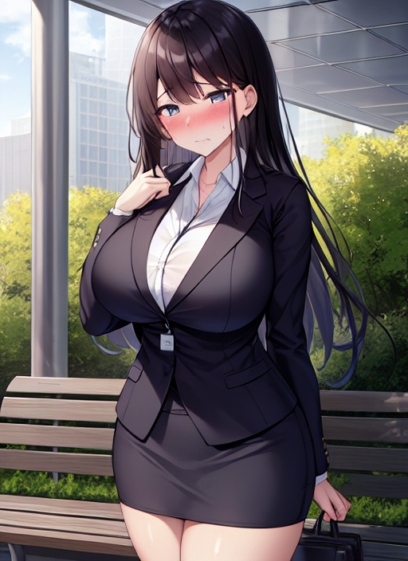

巨乳の悩み
ある日の事、あつきは駅前のベンチに座ってコンビニで買った弁当を食べていた。
駅前は多くの人たちが行きかっており、あつきはその人たちを眺めながら弁当を食べ進める。
とその時、一人のOLがあつきの目の前を通過した。
そのOLは見事なほどの大きな胸をしており、一歩一歩進むたびにポヨンポヨンと大きく弾む。
「うわぁ・・・すごい巨乳だなぁ・・・。僕もあんな女性になってみたいなぁ・・・。」
OLの巨乳に目を奪われたあつきは、ふとそう呟いた。
すると、そのOLがあつきの方を向いたかと思うと、ツカツカとあつきの所へ歩み寄ってきた。
「ねぇ、あなた、さっき私みたいな女性になりたいって言った？」
「えっ・・・？」
「私みたいになりたいって言ったかって聞いてるのよ。」
「は、はい。言いました。」
「そう・・・・・だったら望み通りにしてあげる。」
そう言うとOLは、指先であつきのおでこをチョンと小突いた。
すると突然、あつきの髪がサラサラと伸び出した。
「えっ！？な、何これ！？僕の髪が！？」
驚くあつき。
髪はどんどん伸びていき、あっという間に美しいロングヘアとなった。
髪だけではない。
手や脚は絞られる様に細くなり、顔は綺麗な小顔に変わり、お腹はへっ込んでいき美しいくびれを形作った。
「い、一体何が起こってるの！？わ、私の身体が・・・・・・・！？」
自然に口から出てきた高い声と「私」という一人称に、思わず口をハッと押さえるあつき。
だが、更なる変化があつきを襲う。
着ていた服がドロロと液体のようになったかと思うと、グニュンとあつきの身体に纏わりついてきた。
「ひゃぁっ！」
あつきは声を上げた。
しかし、そんなあつきをよそに、液体と化した服はあつきの全身を覆い尽くすとグニグニと形を変えて、ピンク色が美しいOL制服に変化した。
また、履いていたスニーカーも、ヒールがついた黒い靴になった。
「な、何これ・・・これが・・・私・・・？」
あつきは自分の身体を見渡し、呆然とした。
無理もない。
自分の目の前に広がっているのが見慣れた自分の身体ではなく、ピンク色のOL制服に身を包んだ美しい身体だったのだから。
OLが手渡した手鏡を見てみても、そこに映っていたのは今まで見てきた自分の顔ではなく、眼鏡をかけた可愛らしい女性の顔だった。
「そ、そんな・・・私・・・OLに・・・。」
「言っておくけど、まだ終わってないからね。」
「え・・・？それってどういう・・・。」
あつきがそこまで言いかけた時だった。
突然、あつきの胸が風船に空気を入れるように、ムクムクと膨らみだした。
「きゃぁっ！？今度は胸が！？」
あつきの胸はみるみる大きく膨らんでいき、目測でも100近くはありそうな程にまでなって止まった。
それと同時に、あつきは突然出来た胸の重さに耐えきれず、前のめりに倒れ込んだ。
「お、重い・・・。」
あつきはゆっくりと立ち上がったが、大きく膨らんだ自分の胸で身体のバランスが取れず、まともに立てなかった。
「どう？あなたの望み通り、私みたいにしてあげたわよ。」
「む、胸が重たいですぅ・・・。」
「そうでしょう。私はね、この巨乳で今まで苦労して来てたのよ。なのに誰もが『羨ましい』だのなんだの色々言ってきた。だから、そんな事をいう人たちを私と同じ姿にするようにしてきたの。今のあなたと同じようにね。」
OLは自分の胸を撫でながらそう言った。
「お、お願いです・・・元に・・・元に戻してください・・・。」
「駄目よ。私と同じようになりたいって自分で言ったんでしょ。しばらくの間、その姿で過ごすといいわ。それじゃあね。」
そう言うとOLは、クルッと向きを変えて歩き出した。
「あぁ！ま、待ってぇ！」
あつきは必死に女性を追おうとしたが、一歩歩く度に胸がブルルンと揺れるため、いつも通りに歩けない。
そうこうしている内に、あつきの視界からOLは消えた。
それからあつきは、巨乳OL『あおい』として生きる事となった。
しかし、男からエロい目で見られるわ、女からは羨望の目で見られるわ、巨乳の重さのせいで肩は凝るわと様々な苦労と悩みがあつきを襲った。
「はぁ・・・こんな事だったら・・・あんなこと言わなきゃ良かった・・・。」
あつきは自分があの時言った呟きを後悔したが、全ては後の祭であった。